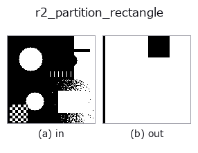

region op• データ種: region → region
• 呼び出し: fullseye.apply(img, "r2_partition_rectangle", a=0.5, b=0.5) (2-D は 1 画像 + 2 スカラつまみ a,b∈[0,1] のモデル)
• HALCON 相当: partition_rectangle(意味・パラメータは HALCON リファレンスが参考になる)

*図は合成の入力 128×128 で実際に走らせた出力。左が入力、右が出力。点群は上から見た散布(明るさ = z)、1-D 列は折れ線、体積は z 方向の最大値投影、動画は中央フレーム、複素画像は振幅、絵にならない返り値は値そのもの。*
つまみ a を振る(0.1 / 0.5 / 0.9、もう一方は既定):
▸ r2_partition_rectangle: knob a sweep (docs site)
*つまみ b は出力を変えない(実測: 0.1 / 0.5 / 0.9 で同一)。*
段階(前置きの op → この op。左から順):
▸ r2_partition_rectangle: stages (docs site)
別の画像でも(合成シーン / 写真 / 硬貨。上段が入力、下段がその出力。つまみは既定):
▸ r2_partition_rectangle: other inputs (docs site)
Split the region bbox into an NxN grid; keep cells overlapping the region.
領域の外接軸並行矩形を `N x N` の格子に等分し、領域と 1 画素でも重なる
セルを丸ごと 1.0 で塗ったマスクを返す。`N = 2 + int(a*4) で a=0` → 2、
`a=1 → 6 分割(a` は [0,1] に clip)。セル境界は
`numpy.linspace(top, bottom+1, N+1)` を整数化したもので、bbox がセル数より
小さいと幅 0 のセルが生じ、そのセルはスキップされる。`b` は未使用。
返り値は入力と同形の float64 0/1 マスク。前景が無ければ全零。出力は「領域を
覆うセルの和」なので入力領域を必ず含み、bbox の外は塗られない。中身が凸で
bbox いっぱいに詰まった領域では全セルが該当し、`a` を変えても出力は bbox
そのものになる。孔や凹みが大きい領域で初めて格子の粗さが見える。用途は
粗いタイル分割(局所処理の窓決め)や占有パターンの粗視化。隣接セルは
つながって 1 つの塊になるため、セル単位で分けて扱う用途には向かない。
• サンプルデータ カタログ(DL URL / ライセンス) — 2-D は skimage.data(BSD/public)+ 合成、3-D は実データ源(Stanford/PDS 等)の DL URL。
• 演算子の来歴・参考文献 — この op 族の元になった研究/手法の出典。
• アルゴリズムの正典(著者・年)と用途は上記ファミリ使い方ガイドに記載。
下のプログラムは実際に走ることを確かめてある(図と同じ入力)。Studio のヘルプではこのブロックがボタンになり、その場で読み込んで実行できる。
threshold 0.50 0.50 r2_partition_rectangle 0.50 0.50
▸ Load this pipeline · Load & run
• gallery2d_region — py -3.11 examples/gallery2d_region.py
region を入力に取れる)identity · reg_erode · reg_dilate · reg_open · reg_close · fill_holes · select_largest · remove_small
region)reg_erode · reg_dilate · reg_open · reg_close · fill_holes · select_largest · remove_small · invert_region
*Provenance: ops.py — 2D operator registry. この per-op ノートは tools/opdocs.py md が自動生成(手編集しない)。*
© 2026 Kazufumi Furuse — Fullseye operator documentation. Licensed under Apache-2.0.
{kind=link}
{kind=link}
{kind=link}